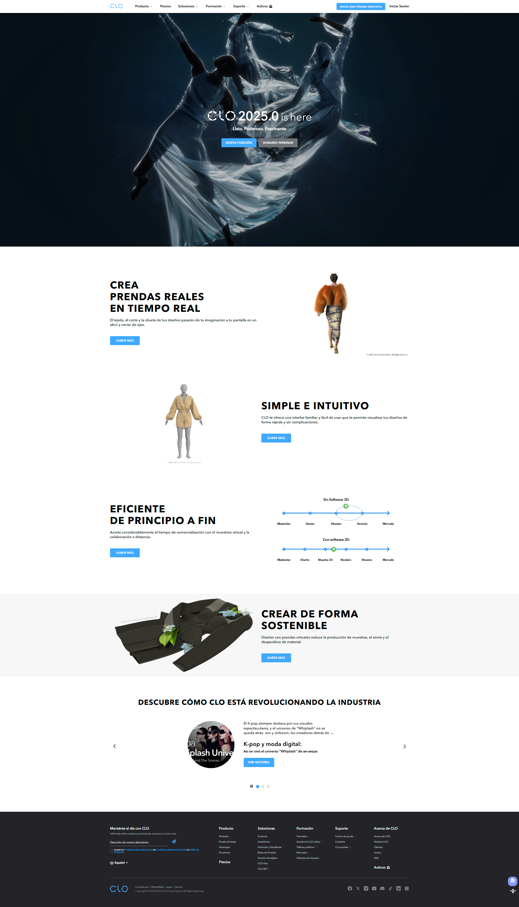

¿Qué es CLO 3D y su aplicación en la moda (prototipado virtual, visualización)?
CLO 3D es un software de diseño de moda tridimensional que permite a los diseñadores crear, visualizar y simular prendas de vestir en un entorno virtual con un alto grado de realismo. Su principal aplicación en la moda radica en:
Prototipado Virtual: CLO 3D elimina la necesidad de producir múltiples muestras físicas, ya que permite crear prototipos digitales de las prendas. Los diseñadores pueden ver cómo la tela se comporta, cae y se ajusta al cuerpo del avatar en tiempo real, facilitando ajustes y modificaciones antes de cortar un solo trozo de tela.
Visualización Fotorrealista: Ofrece capacidades avanzadas de renderizado que permiten generar imágenes y animaciones de alta calidad de las prendas virtuales. Esto es invaluable para presentaciones de colecciones, catálogos digitales y campañas de marketing, proporcionando una vista previa detallada de cómo se verá la prenda en la realidad.
Diseño Interactivo: Permite la manipulación directa de patrones 2D y su inmediata transformación en 3D, facilitando la experimentación con siluetas, volúmenes y detalles.
Navegación Básica en el Entorno 3D (Rotar, Hacer Zoom, Mover)
Dominar la navegación en el espacio 3D de CLO 3D es fundamental para interactuar con las prendas y avatares. Las acciones básicas son:
Rotar (Orbitar): Permite girar la vista alrededor del objeto (la prenda y el avatar) para examinarlo desde cualquier ángulo. Esto se suele hacer manteniendo presionado el botón Alt (o Opción en Mac) y el botón izquierdo del ratón, mientras se arrastra.
Hacer Zoom (Acercar/Alejar): Ajusta el nivel de detalle de la vista, acercando o alejando el objeto. Generalmente, se logra usando la rueda de desplazamiento del ratón (scroll) o manteniendo Alt (o Opción) y el botón derecho del ratón y arrastrando.
Mover (Panear/Desplazar): Permite mover la vista lateralmente o verticalmente sin cambiar la orientación del objeto. Se realiza manteniendo Alt (o Opción) y el botón central del ratón (o la rueda presionada) y arrastrando.
Identificación de Paneles Clave: Biblioteca, Propiedades, Visor 3D, Visor 2D
El entorno de CLO 3D se organiza mediante paneles que agilizan el flujo de trabajo:
Visor 3D: Es la ventana principal donde se visualiza la prenda tridimensionalmente sobre el avatar. Aquí se realizan la simulación, los ajustes de pose y la visualización de los materiales.
Visor 2D: Muestra los patrones planos de la prenda, tal como se dibujarían o cortarían. Los cambios realizados en el Visor 2D se reflejan instantáneamente en el Visor 3D.
Panel de Biblioteca: Contiene una vasta colección de avatares, telas, texturas, adornos, botones, cremalleras y otros elementos preestablecidos que pueden arrastrarse y soltarse en el proyecto.
Panel de Propiedades: Un panel dinámico que muestra los atributos y ajustes del elemento seleccionado actualmente (ya sea una pieza de patrón, una costura, una tela, un avatar o una luz). Permite modificar parámetros como el color de la tela, la elasticidad, el grosor, las propiedades de la costura, entre otros.